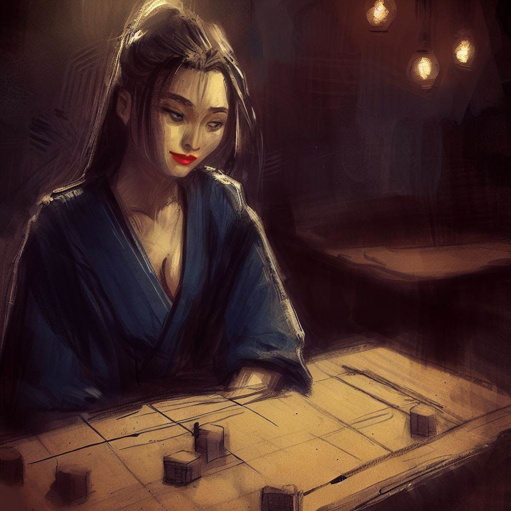

Komayo: Les Échos Mystiques du Jeu d'Ogi
Je voudrais prendre un moment pour exprimer ma gratitude envers Komayo, qui m'a initié à ce fascinant jeu de stratégie. Son charme et son mystère ont laissé une impression marquante dans ma vie. Ce qui suit est le récit de notre rencontre, un souvenir précieux que j'ai souhaité partager à travers ces lignes.
L'Échappatoire du Bureau
Alors que le jour cédait la place au crépuscule, je quittais mon bureau. L'air conditionné artificiel et froid était désormais derrière moi, remplacé par la brise du soir d'Osaka, douce et vivifiante.
La frénésie diurne s'estompait progressivement, laissant place à une sérénité nocturne. Mes pensées, encombrées par le travail de la journée, commençaient à s'éclaircir face à l'immensité étoilée et au calme tranquille de la ville.

Je me laissais guider à travers les ruelles enchevêtrées de la ville. La monotonie du jour semblait se dissoudre à chaque coin de rue, remplacée par le mystère de l'inconnu. La silhouette douce et accueillante des gratte-ciels sous le voile nocturne, leurs lumières scintillantes dans le ciel de béton, contrastait avec leur présence intimidante le jour.
L'ambiance vibrante des allées marchandes, le parfum des restaurants de rue et le murmure des conversations nocturnes créaient un tableau urbain exaltant. Mon esprit, bien qu'épuisé, cherchait un défi intellectuel, une distraction des tracas de la journée. C'est alors que j'aperçus une enseigne discrète, Bar de la Régence, un sanctuaire pour les amateurs de shogi.
La présence du Bar de la Régence, niché dans cette ruelle tranquille, suscitait en moi une envie discrète mais persistante d'entrer. Cet endroit, promettant des défis stimulants et une pause nécessaire, éveillait une curiosité latente et un attrait subtil.
L'Antre de la Partie
L'éclairage doux et discret du Bar de la Régence m'accueillit, son ambiance chaleureuse évoquant un sentiment de tranquillité. La sérénité de l'endroit était imprégnée par le déroulement de nombreuses parties de shogi, qui avaient sans doute animé les soirées de plusieurs générations de joueurs en quête d'évasion.
Avant de m'immerger dans l'univers du jeu, j'ai commandé un verre de saké au comptoir. Le parquet ancien protestait doucement sous mes pas, tandis que mes yeux s'adaptaient à la lumière feutrée. Le doux bruit des pièces de shogi, les chuchotements des conversations et le bruissement des éventails ajoutaient une touche mystique à l'atmosphère. L'arôme du bois ancien, mélangé à celui de l'encens, apaisait mes sens et me préparait pour l'engagement intellectuel à venir.
Les clients, hommes et femmes de tous âges, se livraient avec passion à leur partie de shogi. Chacun exprimait à sa manière la tension, la joie ou la déception associées à chaque coup joué. C'était un ballet silencieux de stratégies et d'esprit qui se déroulait devant mes yeux.
En cherchant un adversaire pour la soirée, mon regard a été attiré par une femme assise seule à une table isolée. Sa présence tranquille et sa beauté subtile ont piqué ma curiosité. D'un pas décidé mais discret, je me suis approché, ai esquissé un sourire poli et lui ai proposé une partie.

Leçon Nocturne
Sa réponse à ma proposition fut un sourire qui illumina son visage, une acceptation tacite ne nécessitant aucune parole.
Avec une grâce inattendue, elle dévoila le plateau de jeu, précédemment caché sous un tissu soyeux. Mon regard étonné se posa sur le shogiban plus petit que la norme, comportant moins de cases et de pièces. À la place du traditionnel 9x9 du shogi standard, un échiquier de 8x8 s'étalait devant moi, préparé pour accueillir seulement 18 pièces par joueur. Avant que je ne puisse formuler une question, l'élégante inconnue entreprit d'expliquer, sa voix baignant l'air de la pièce comme une brise douce d'été.
"Ceci n'est pas le shogi traditionnel que vous connaissez, c'est l'ogi, une variante," déclara-t-elle, un air amusé éclairant son regard.

"Au sein de cet assortiment de figures, une se démarque par sa majesté. Empruntant la dignité du fou et la liberté du cavalier," précisa-t-elle, indiquant l'élégante pièce centrale. "Voici la princesse, qui règne en maîtresse sur l'ogiban, ajoutant une couche de complexité à notre version contemporaine du shogi."
Son sourire s'élargit à la vue de ma surprise. Une lueur taquine brillait dans ses yeux, une malice qui ne faisait qu'accroître le mystère qui l'entourait. Elle commença à positionner les pièces sur le plateau, ses doigts agiles et précis animant notre futur champ de bataille.
Alors qu'elle installait les pièces, je remarquai une autre divergence : des tours qui se tenaient aux coins du ogiban. "Les lances traditionnelles sont remplacées par ces tours," expliqua-t-elle comme si elle lisait mes pensées, "apportant une dimension supplémentaire à notre joute."
Les pièces étaient maintenant disposées, chaque tour, chaque général, chaque pion aligné en une harmonie parfaite. Tout en prévoyant le combat à venir, je me retrouvais irrésistiblement attiré par ce puzzle nouvellement dévoilé, rendu encore plus fascinant par le scintillement doré des pièces et le regard pétillant de ma mystérieuse adversaire.
L'Épreuve de l'Esprit
Le tic-tac de l'horloge rythmait le temps qui s'écoulait, alors que le silence de la bataille n'était interrompu que par le léger bruit des pièces sur le plateau. Le fou se mouvait avec détermination, le cavalier bondissait avec audace, et la princesse dominait le champ de bataille avec une efficacité impressionnante. Le rythme presque imperceptible du combat emplissait la pièce, lui conférant une tension tangible.
Avec une habileté déconcertante, mon énigmatique adversaire dirigeait ses pièces. Celles qui étaient capturées, plutôt que d'être éliminées, étaient habilement réintroduites, parachutées derrière mes lignes, insufflant une dynamique changeante à la bataille. Chaque mouvement était une leçon de tactique, chaque pièce reliée à une autre par des liens invisibles tissés avec une minutie presque chirurgicale.
Je tenais bon, manipulant mes pièces avec une détermination farouche, repoussant ses assauts par une défense soigneusement orchestrée. Pourtant, chaque décision semblait puiser dans mes réserves d'énergie, chaque mouvement devenant de plus en plus lourd à effectuer. Mes paupières commençaient à peser, la fatigue essayant de gagner du terrain.
Et alors que je luttai pour garder les yeux ouverts, le sommeil, cet adversaire furtif, prit le dessus. Mon corps céda à l'épuisement, les lumières du bar dansant devant mes yeux qui s'obscurcissaient. Je plongeai dans une obscurité apaisante, la dernière image ancrée dans ma mémoire étant le sourire victorieux de ma mystérieuse adversaire, scintillant comme une lune distante dans un ciel d'encre.
Les Échos de l'Aube
Le temps semblait s'être volatilisé, englouti par les ténèbres qui enveloppaient mon esprit. La transition vers l'obscurité fut douce et sans bruit, me laissant naviguer dans un brouillard déroutant. Mon esprit se débattait dans un océan de confusion, luttant pour ressurgir des ténèbres.
Telle une barque perdue dans la nuit, je retrouvai finalement le chemin vers la lumière du jour. Mes yeux s'ouvrirent sur la pièce presque inchangée, baignée dans la lumière douce de l'aube. L'ogiban se tenait tel que je l'avais laissé, témoin silencieux de la bataille de la nuit. Toutefois, le siège de mon adversaire était désormais vacant, l'aura mystérieuse de la jeune femme s'était dissipée comme un rêve au lever du jour.
Le poids de son absence se faisait sentir, un vide indéfinissable qui alourdissait l'air, rendait la pièce plus silencieuse. Mon regard glissa sur l'ogiban et s'arrêta sur une feuille de papier soigneusement pliée à côté du plateau de jeu. Avec une certaine appréhension, je la saisis.
Un seul mot y était inscrit, "Merci", accompagné d'un nom - "Komayo". Une signature élégante, un dernier vestige de cette rencontre fugace et pourtant marquante, passée au Bar de la Régence à jouer à l'ogi avec l'insaisissable et fascinante Komayo.